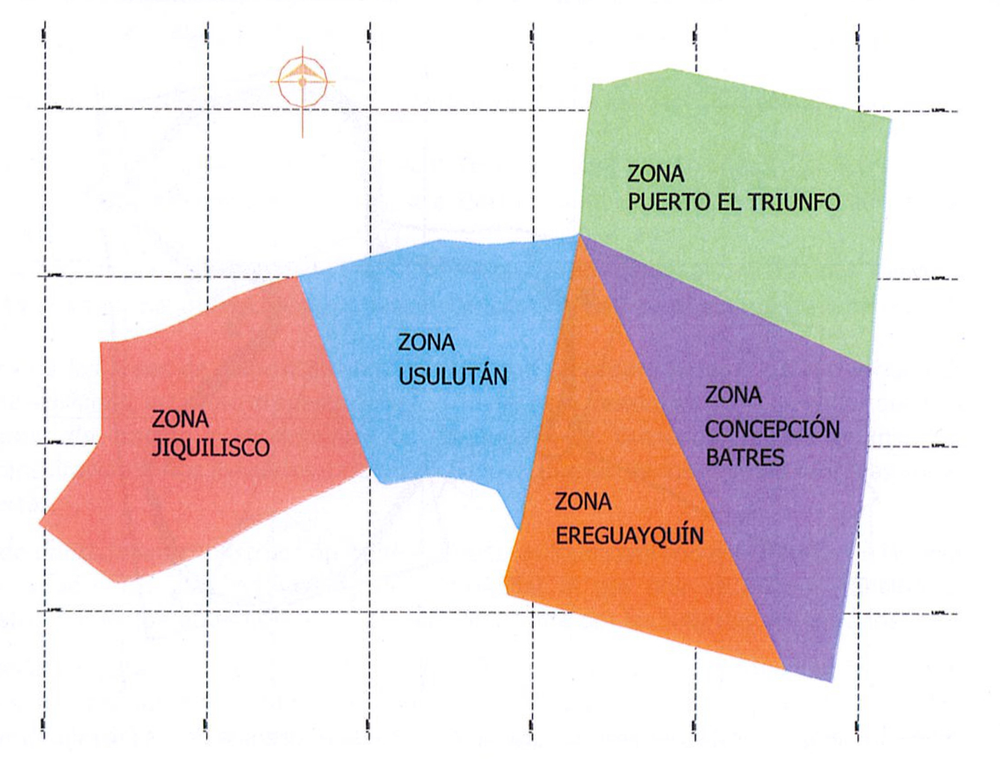
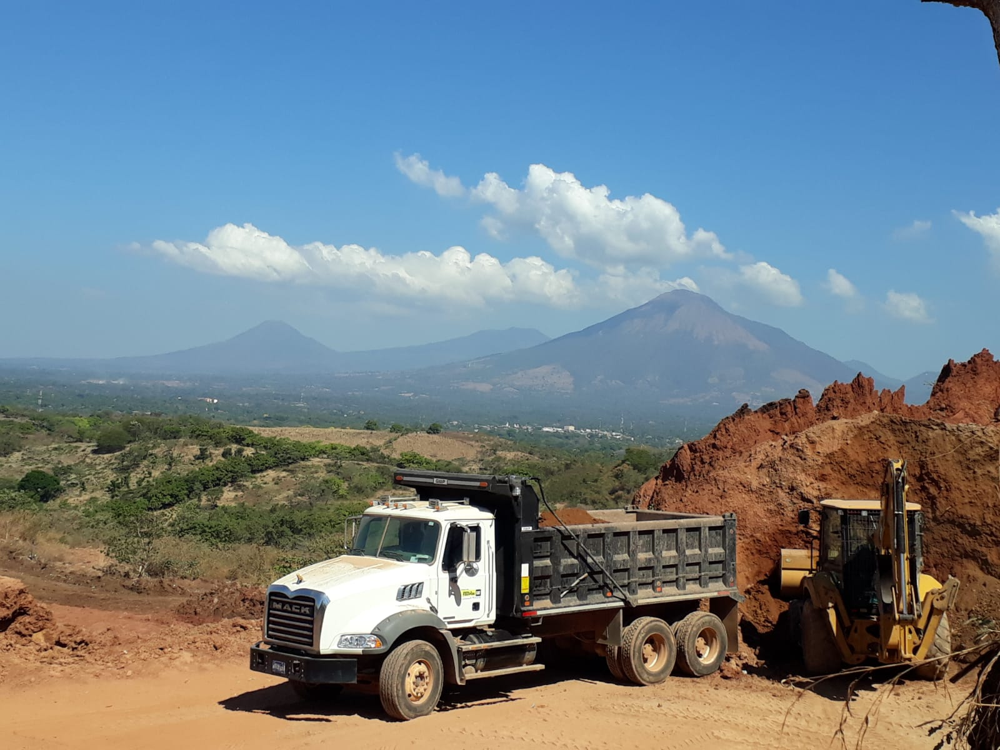

El Relleno Sanitario de Usulután SOCINUS, S.E.M. DE C.V. inició operaciones en el año 2002 y está desarrollado en un inmueble de 420,687.16 m², que equivale a 60.16 Manzanas, ubicado en el cerro El Desparramo, cantón Palo Galan, municipio y departamento de Usulután.
El relleno se ha convertido en la solución a la disposición final de residuos sólidos para la mayoría de municipios en el oriente del país.
El relleno se construyó bajo el concepto general de planificación del desarrollo por zonas de trabajo que se construirán a lo largo de su vida útil; para ello, se identificaron las áreas potenciales con capacidad de almacenamiento de desechos y con el objeto de darle identidad al proyecto, se le asignó un nombre a cada zona, bautizándola con el nombre de los cuatros municipios socios, incluyendo la zona 5 que la constituye un cerro con mucho afloramiento de roca, el cual no será utilizado como zona activa del relleno; por lo tanto se identificó como Cerro Jiquilisco, en honor al primer municipio cliente que adquirió un contrato de servicios con SOCINUS, S.E.M. de C.V.
En la imagen se muestra la zonificación del proyecto. La primera zona de trabajo la constituye la Zona Puerto El Triunfo, debido a que en el diseño original se decidió trabajar primeramente esta zona y es en la que se tiene la infraestructura básica, como el acceso principal, la báscula y los accesos internos que conducen hacia la primera área habilitada del relleno sanitario.

En la siguiente imagen se muestra la maquinaria y equipo utilizado en el relleno sanitario para su mantenimiento.

Ser una empresa líder en el manejo y disposición de residuos, mediante procesos que garanticen la conservación medioambiental, desarrollando alternativas de solución a nuestros clientes.
Posicionarnos como líderes en el manejo y disposición de residuos sólidos a nivel Paracentral y Oriental, integrándonos hacia el desarrollo como fuente de energía renovables autóctonas.